EXPERIMENT
Overview
We divided the experimental validation into two modules.
Experiment A:
Synthesis and elongation of a 6-helix DNA bundle via Bundled HCR.
In Experiment A, we investigated the reaction mechanism of Bundled HCR using a minimal model designed to elongate into a 6-helix DNA bundle. Given the high scalability of the Bundled HCR architecture, successful synthesis of the 6-helix bundle indicates that the system can be readily scaled up to 12-helix and 13-helix bundles.
Experiment B:
Lipid membrane disruption by 12-helix and 13-helix DNA bundles.
In Experiment B, we evaluated the physical membrane-disrupting capability of cholesterol-modified 12-helix and 13-helix DNA bundles. We chose 12- and 13-helix DNA bundles because they possess sufficient rigidity to deform and rupture lipid membranes, as indicated by our simulation results. In Experiment B, these structures were pre-assembled via thermal annealing.
2. Experiment A: Synthesis and Elongation of a 6-Helix DNA Bundle via Bundled HCR
Materials
As the materials for Bundled HCR, we prepared a seed and six double-hairpin DNA strands (H1–H6).
The seed consists of the single-stranded DNAs S1–S6 shown in Table 1 and assembles into the structure shown in Figure 1 by annealing. In Table 1, a domain labeled “a1*” hybridizes complementarily to domain “a1”.
| Strand | Length | Domains |
|---|---|---|
| S1 | 42 nt | a1 – b1 – a2 – b2 |
| S2 | 84 nt | B – A – b2* – a2* – b3* – a3* – C – D |
| S3 | 42 nt | a3 – b3 – a4 – b4 |
| S4 | 84 nt | F – E – b4* – a4* – b5* – a5* – G – H |
| S5 | 42 nt | a5 – b5 – a6 – b6 |
| S6 | 84 nt | J – I – b6* – a6* – b1* – a1* – K – L |
Full sequences: Appendix

The sequences of the six double-hairpin DNAs (H1–H6) are shown in Table 2, and the structures they adopt in solution at 25 °C are shown in Figure 2.
| Strand | Length | Domains |
|---|---|---|
| H1 | 84 nt | L – R – L – K – A* – B* – M – B |
| H2 | 84 nt | D – N – D – C – E* – F* – O – F |
| H3 | 84 nt | H – P – H – G – I* – J* – Q – J |
| H4 | 84 nt | B – A – B – M – N* – D* – C – D |
| H5 | 84 nt | F – E – F – O – P* – H* – G – H |
| H6 | 84 nt | J – I – J – Q – R* – L* – K – L |
Full sequences: Appendix
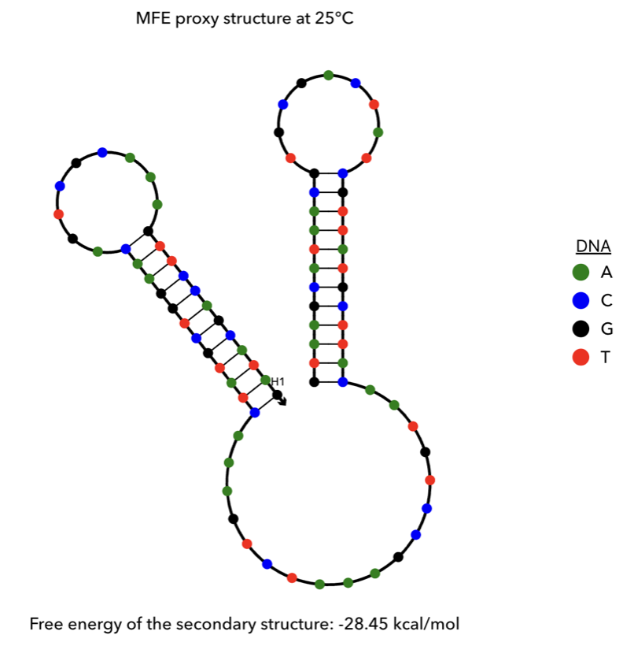
(a) H1
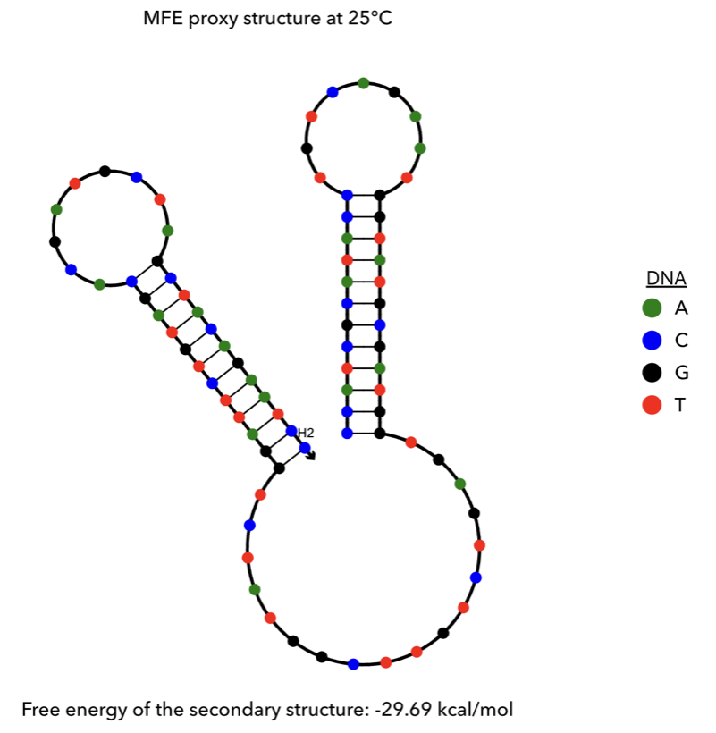
(b) H2
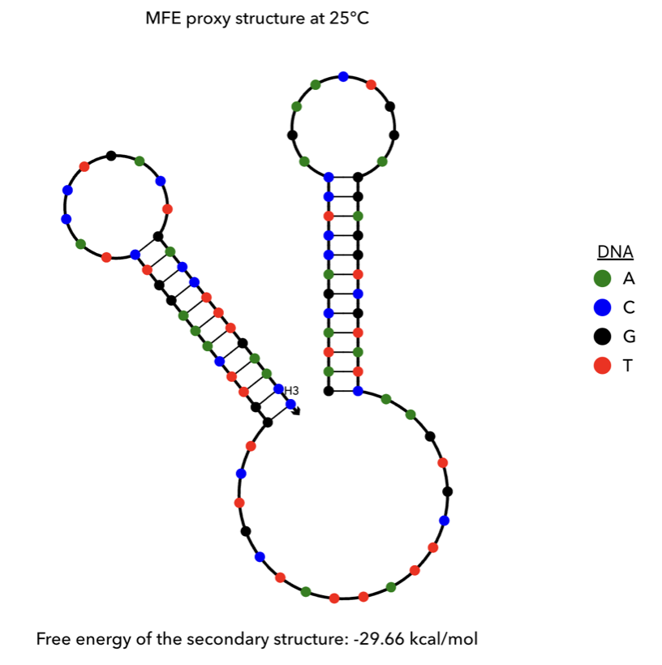
(c) H3
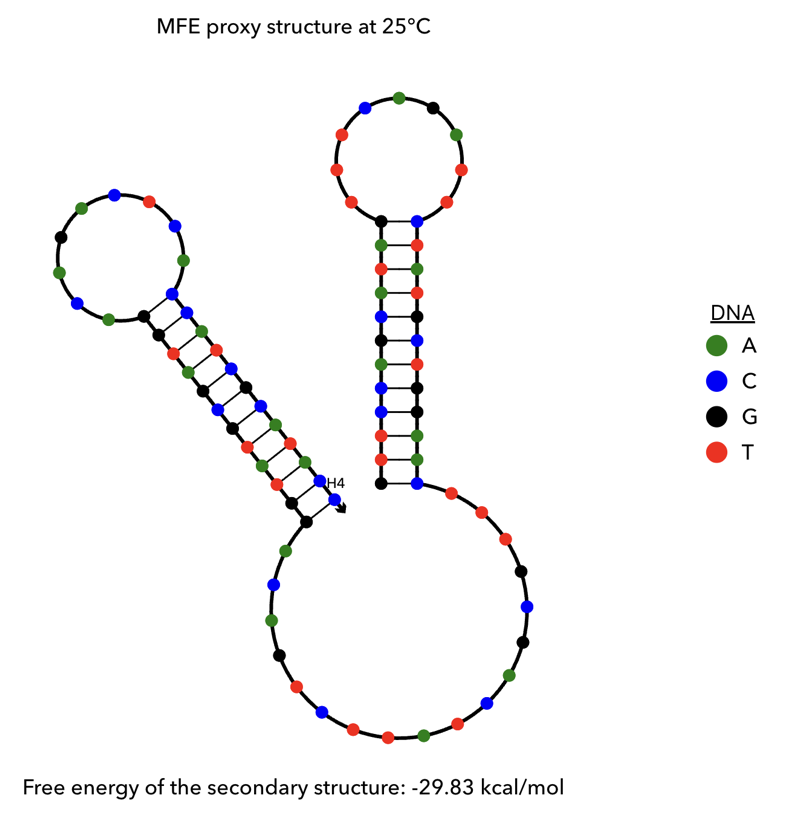
(d) H4
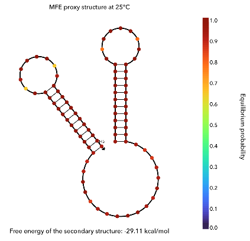
(e) H5

(f) H6
2.1 Verification of Seed Formation by PAGE Electrophoresis
Overview
To confirm that the seed annealing proceeded properly, we performed PAGE. Each of the single-stranded DNAs S1–S6 and the annealed seed were electrophoresed to check for a difference in molecular weight. Electrophoresis was performed in 1× TBE buffer containing 12 mM MgCl2 at 150 V for 60 minutes at 4 °C.
Results
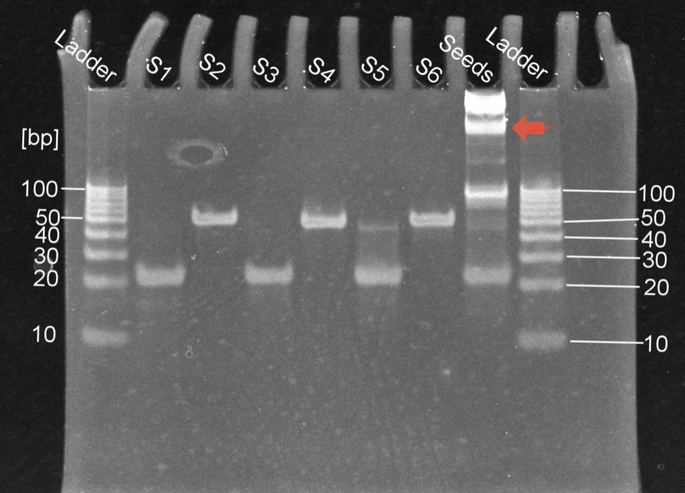
Discussion
Only the seed lane showed high-molecular-weight bands that were not observed in the S1–S6 lanes. The bands were identified from the relationship between migration distance and molecular weight calculated from the ladder.
2.2 Verification of Bundled HCR Progression by Gel Electrophoresis
Overview
Agarose gel electrophoresis was performed on samples in which the seed and H1–H6 were mixed, to confirm whether Bundled HCR proceeded and the bundle elongated.
After mixing the seed with H1–H6, the samples were left at room temperature for approximately 22 hours. Electrophoresis was performed in 1× TAE buffer containing 5 mM MgCl2 at 100 V for 40 minutes at 4 °C.
Results
Discussion
[Add discussion.]
2.3 Observation of DNA Bundles by AFM
Results
Discussion
[Add discussion.]
3. Experiment B: Lipid Membrane Disruption by 12-Helix and 13-Helix DNA Bundles
Materials
Following the designs reported in previous studies [1, 2], the 12-helix and 13-helix bundles were synthesized by annealing the single-stranded DNAs V1–V12, T12, and T13 shown in Table 3.
In the 12-helix bundle, V1–V11 and T12 hybridize as shown in Figure 4; in the 13-helix bundle, V1–V12 and T13 hybridize as shown in Figure 5. Each assembles into a bundle hundreds to thousands of nanometers long.
Because cholesterol was attached to the 3′ end of the 42-nt strand V1, the resulting 12- and 13-helix bundles carry a cholesterol modification every 21 nucleotides.
For the cholesterol-free 12- and 13-helix bundles prepared as controls, unmodified V1 was used instead.
| Strand | Length | Domains |
|---|---|---|
| V1 (cholesterol-modified) | 42 nt | a1* – b1* – a2 – b2 |
| V2 | 42 nt | a2* – b2* – a3 – b3 |
| V3 | 42 nt | a3* – b3* – a4 – b4 |
| V4 | 42 nt | a4* – b4* – a5 – b5 |
| V5 | 42 nt | a5* – b5* – a6 – b6 |
| V6 | 42 nt | a6* – b6* – a7 – b7 |
| V7 | 42 nt | a7* – b7* – a8 – b8 |
| V8 | 42 nt | a8* – b8* – a9 – b9 |
| V9 | 42 nt | a9* – b9* – a10 – b10 |
| V10 | 42 nt | a10* – b10* – a11 – b11 |
| V11 | 42 nt | a11* – b11* – a12 – b12 |
| V12 | 42 nt | a12* – b12* – a13 – b13 |
| T12 | 42 nt | a12* – b12* – a1 – b1 |
| T13 | 42 nt | a13* – b13* – a1 – b1 |
Full sequences: Appendix


As Figure 5 shows, in the 13-helix bundle V1 and T13 hybridize while twisting, so the bundle becomes twisted and cholesterol protrudes in all directions around it. In the 12-helix bundle, by contrast, V1 and T12 hybridize without twisting, so cholesterol protrudes in only one direction.
3.1 Verification of Bundle Formation by PAGE Electrophoresis
Overview
To confirm that annealing proceeded properly and the 12- and 13-helix bundles formed, we performed PAGE. Each of the single-stranded DNAs V1–V12, T12, and T13 and the annealed cholesterol-modified 12- and 13-helix bundles were electrophoresed to check for a difference in molecular weight.
Electrophoresis was performed in 1× TAE buffer containing 12 mM MgCl2 at 100 V for 60 minutes at 4 °C.
Results
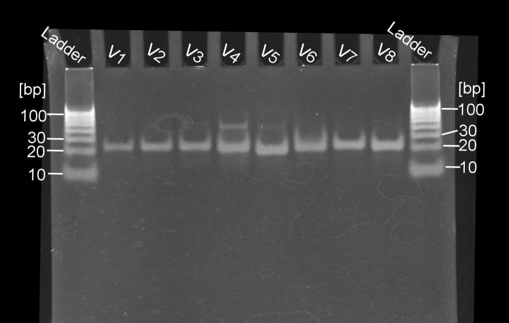
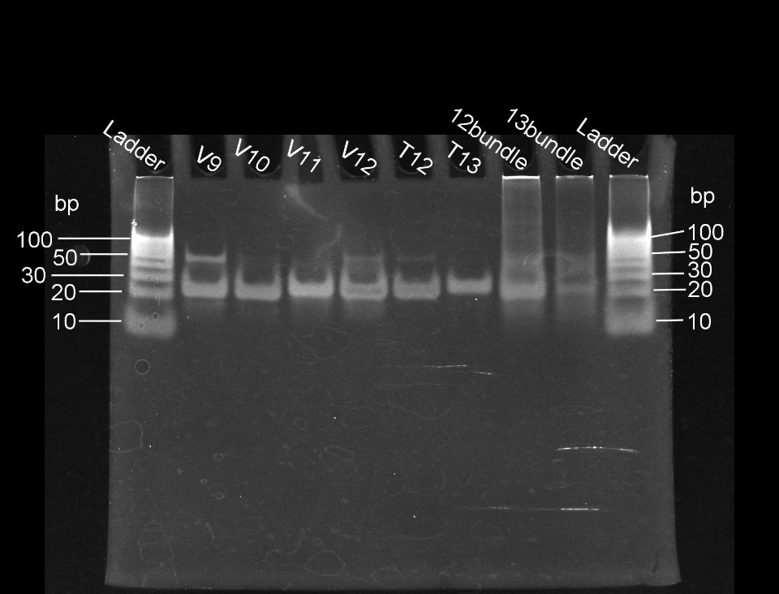
Discussion
Only in the 12-bundle and 13-bundle lanes was a band observed at the top of the gel that had not entered the gel. This indicates that large structures were present only in the 12-bundle and 13-bundle samples, suggesting that annealing proceeded properly and the DNA bundles were synthesized.
Because V1–T13 are 42-nt ssDNAs, bands appearing at 20–30 bp are reasonable. The faint bands observed at 40–50 bp in the V4, V5, V9, and V12 lanes are thought to be ssDNA that formed dimers.
3.2 Observation of 12- and 13-Helix DNA Bundles by AFM
Overview
To confirm that the high-molecular-weight structures observed in the 12-bundle and 13-bundle lanes by electrophoresis were DNA bundles, we observed them by AFM. The cholesterol-free 12- and 13-helix bundles, which are used as controls in the following experiments, were also observed.
Results
Discussion
Elongated structures were observed in all samples.
3.3 Fluorescence Observation of DNA Bundle Anchoring to Lipid Membranes
Overview
The aim was to confirm whether DNA bundles anchor to lipid membranes via cholesterol. Cholesterol-modified and unmodified DNA bundles were each mixed with liposomes (GUVs) and observed by fluorescence microscopy to compare whether they bound to the liposomes.
- GUVs — stained with Nile Red (red fluorescence). The GUVs in this experiment were prepared by gentle hydration, using a lipid film solution of 1 mM DOPC with 0.2 mol% Nile Red (in CHCl3) and 1 mM glucose solution mixed at 2:1.
- 12- and 13-helix DNA bundles — stained with SYBR Green I (green fluorescence).
Results 1
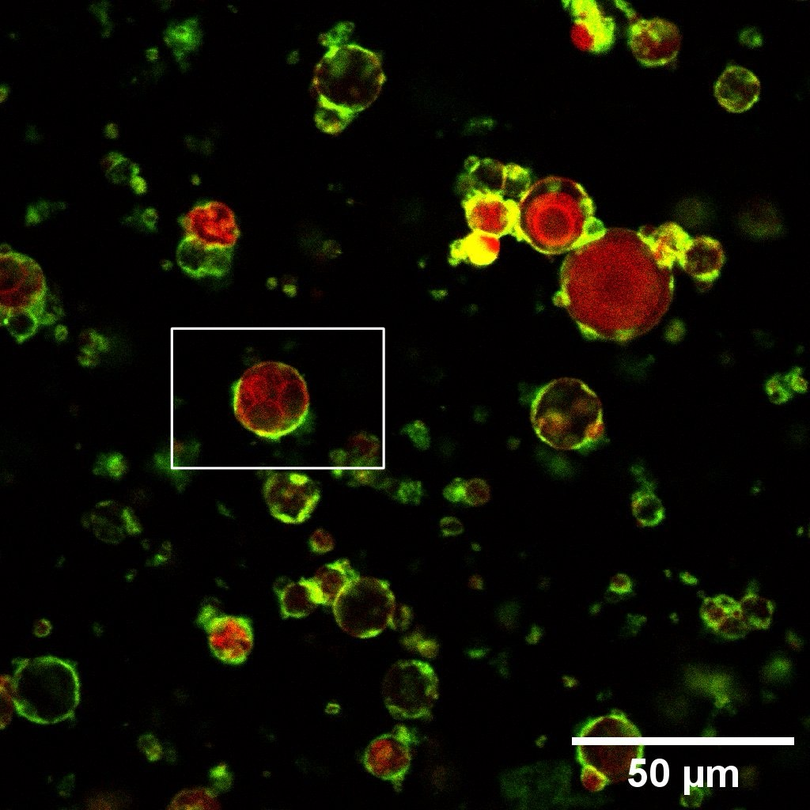
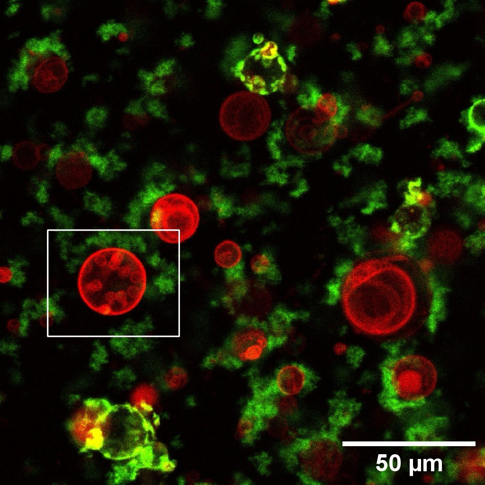
Discussion 1
[Add discussion.]
Results 2
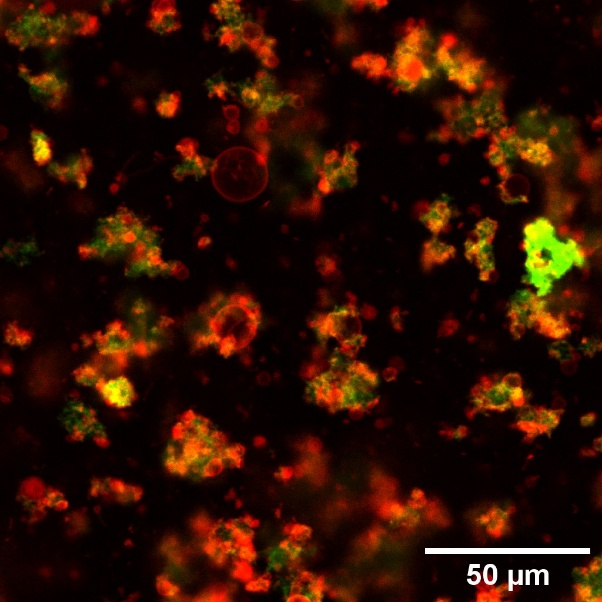
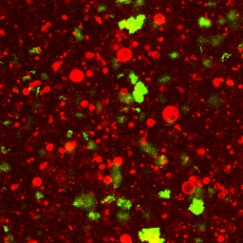
Discussion 2
[Add discussion.]
3.4 Verification of Membrane Disruption by 12- and 13-Helix Bundles Using Fluorescence Microscopy
[Add methods and results for membrane disruption verification.]
[1] Maier, A. M., et al. (2017). "Self-Assembled DNA Tubes Forming Helices of Controlled Diameter and Chirality." ACS Nano, 11(2), 1301-1306.
[2] Yin, P., et al. (2008). "Programming DNA Tube Circumferences." Science, 321(5890), 824-826.